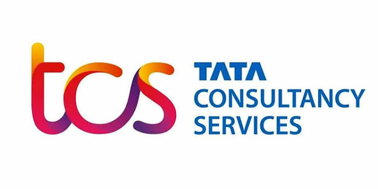
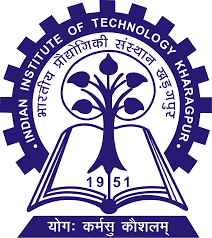
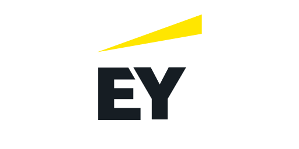
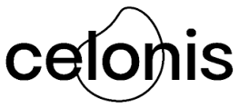
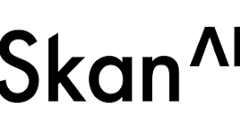

Vijay Surisetty
My career started with technology and business processes. Over time, I found myself moving closer to the business side of technology, first through presales, then consulting, enterprise solutioning, partner-led growth and, more recently, AI-enabled transformation.
Across these roles, I have had the opportunity to see technology from different sides: working with teams building and delivering solutions, customers solving real business problems, partners taking those solutions to their clients, and leadership teams looking at where technology can create meaningful value.
That journey has shaped how I think about technology today. I am less interested in technology for its own sake and more interested in what happens when it meets a real process, a real business problem and the people who have to make it work.
Today, I work at the intersection of GTM, Solutions and Transformation, helping enterprises turn technology and transformation ideas into solutions that can be adopted, scaled and translated into business value.
I also enjoy stepping outside my day-to-day work to explore ideas around technology, business and society. This website is where I want to capture some of those thoughts over time.
My Journey
Technology → Presales → Consulting → Partner-led Growth → AI Solutions & Transformation





Highlights
Not a list of what I did at each company. Experiences that show how I think, solve problems, create value, and work with people.
Professional
Turning Partner Ecosystems into a Growth Engine
Learned how to turn a global partner ecosystem into a growth engine, from embedding Process Intelligence into partner portfolios to creating joint propositions, GTM motions, workshops and custom solutions. Worked across GSIs, Big Four firms and specialist SIs, owning the partner-acceleration side of a $5M+ ACV pipeline and a ~$500K renewal. This experience fundamentally shaped how I think about ecosystem-led growth.
Read the full story →Taking AI from POC to Production
Taking enterprise AI beyond the POC, from process walkthroughs and solution design to production deployment, troubleshooting, insights and value realization. Alongside customer delivery, I lead a 10-person consulting team and enable GSIs to independently deliver implementations. The experience has taught me that enterprise AI value is created not at the point of demonstration, but through adoption, data, insight and action.
Read the full story →Building Executive Diagnostics for Finance & Supply Chain
Built executive diagnostic concepts for CFO and CSCO personas, translating complex Process Intelligence data into a simple view of performance, benchmarks, deviations and potential value. Developed Finance and Supply Chain diagnostics spanning areas such as AP, AR, working capital, procurement, inventory and order management. The experience taught me how to turn analytical complexity into an executive-level business case.
Read the full story →MBA / Experiences
Few experiences from IIT Kharagpur that reveal dimensions a conventional professional portfolio never would.
04 · Niine Path Breakers Challenge
A national case-study competition became one of the most personally transformative experiences of my MBA. My team went into rural communities around Kharagpur/Medinipur to understand barriers to menstrual hygiene, worked with local self-help-group networks and developed a community-led awareness and distribution model. We finished as national runners-up, but the bigger takeaway was learning how field realities, trust and social context can fundamentally change how you approach a problem. For me personally, it also meant learning to have conversations about menstruation that I had never had before.
Read the full story →05 · Pink Cab Initiative
When the local District Magistrate approached IIT Kharagpur's Entrepreneurship Cell about extending the Pink Cab initiative to Kharagpur, I volunteered to help. I worked with the administration, local taxi operators and women drivers to help connect the pieces needed to operationalise it. The moment that stayed with me came later, when one of the women drivers recognised me on campus and shared that her income was helping support her children's education and household. It remains one of the clearest examples of why I value work that creates a tangible human outcome.
Read the full story →Thoughts
This is where I'll write, occasionally, about technology, business, processes, AI and the ideas I'm exploring.
Nothing here yet. Check back, or subscribe to hear when the first piece goes up.
Stay in the loop.
I write occasionally about technology, business, processes and ideas I'm exploring.
No spam. Just the occasional piece of writing.